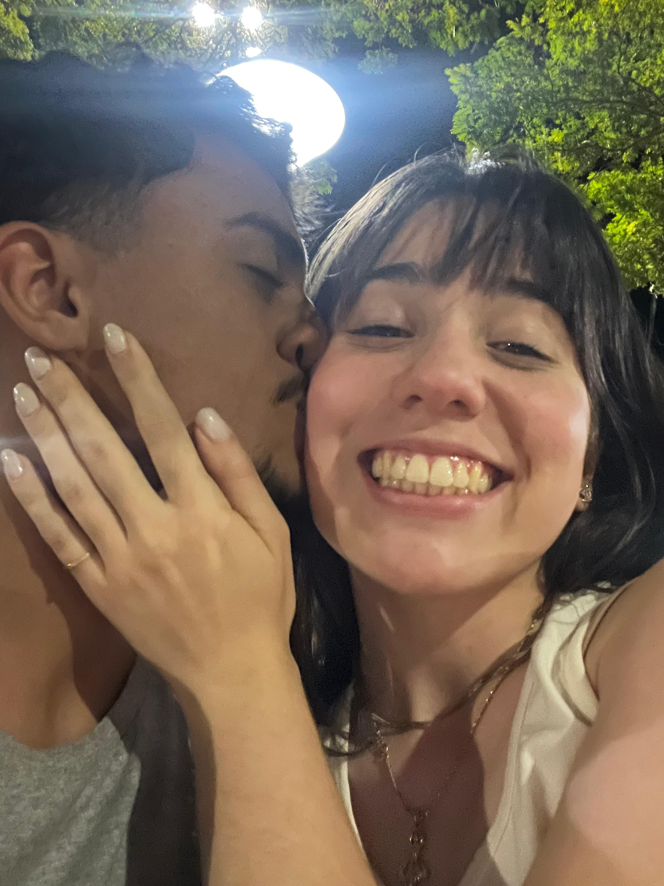
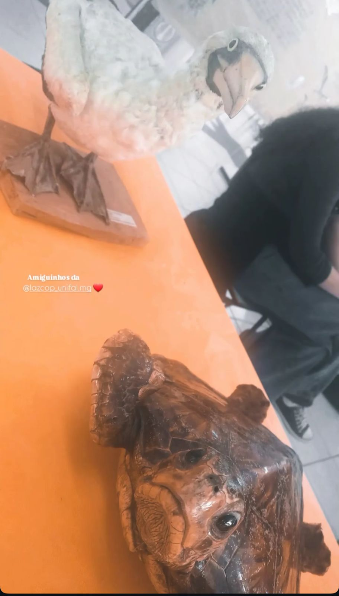
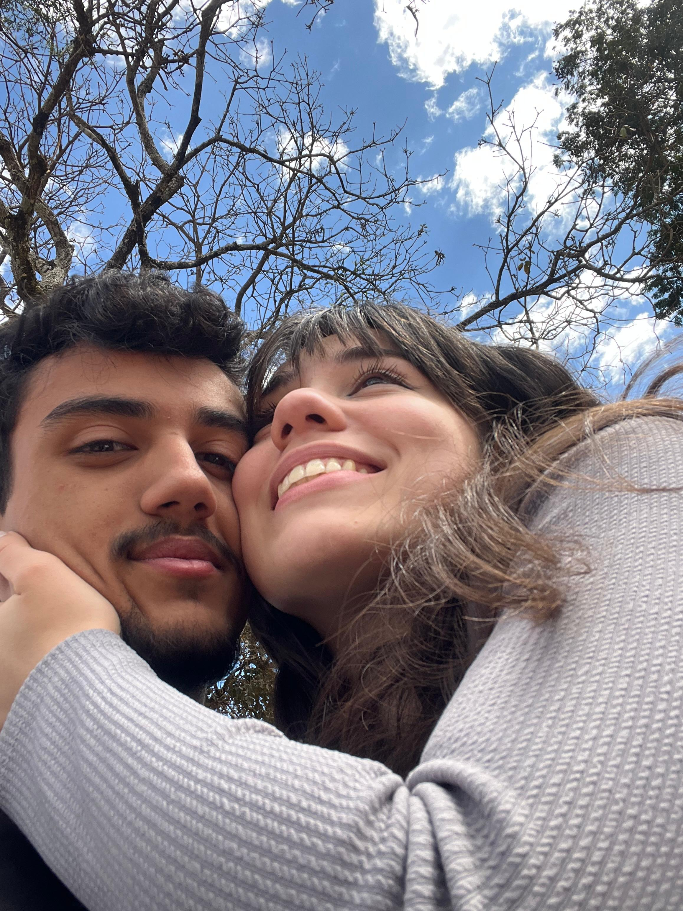
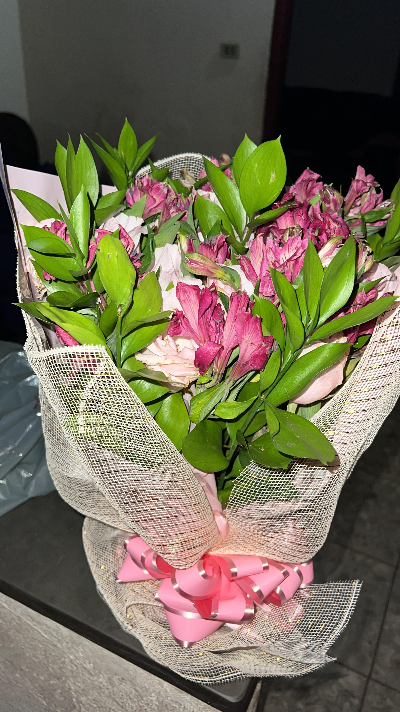
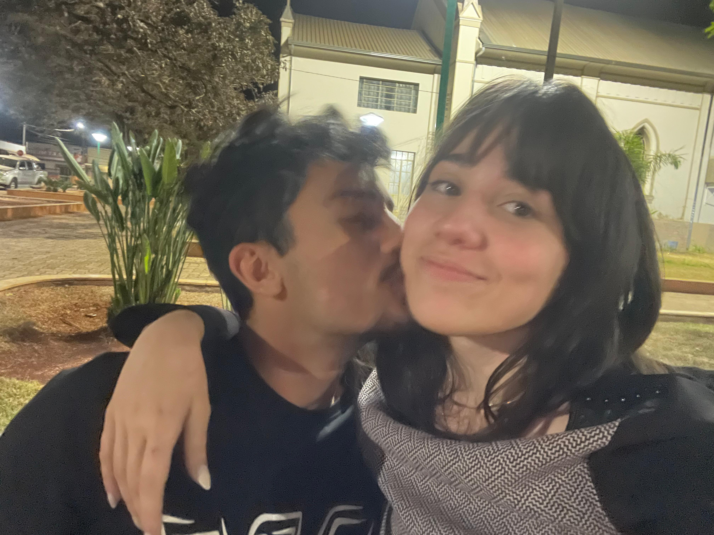
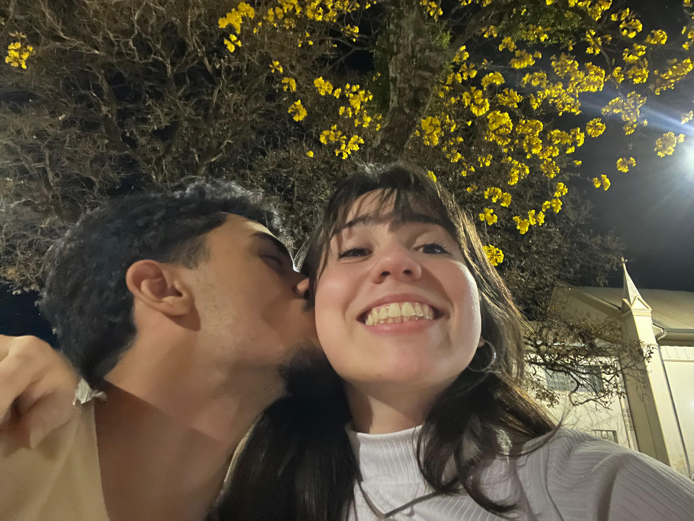
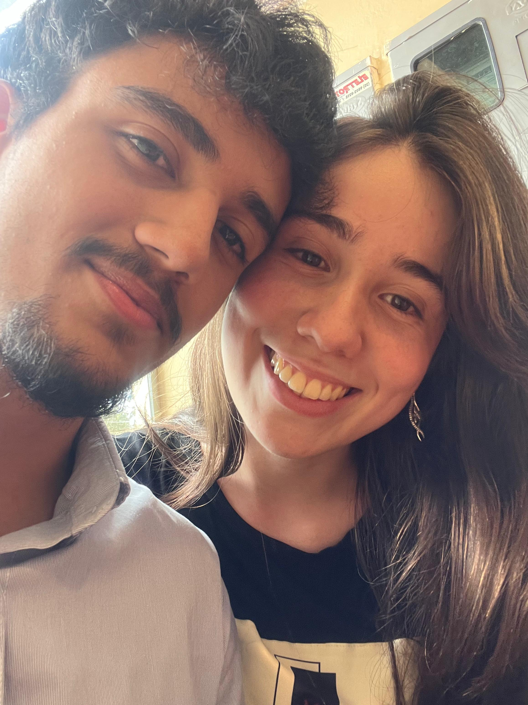
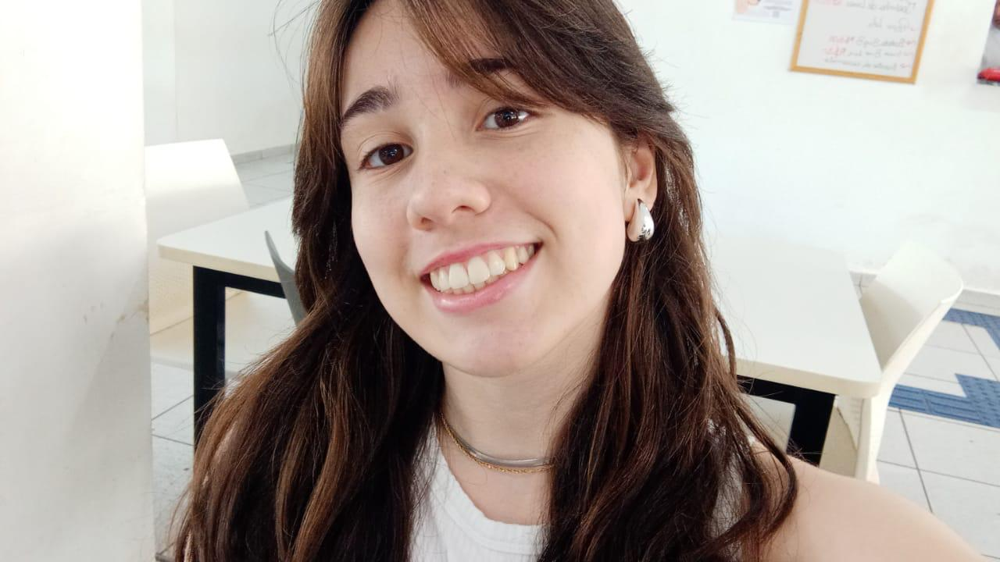
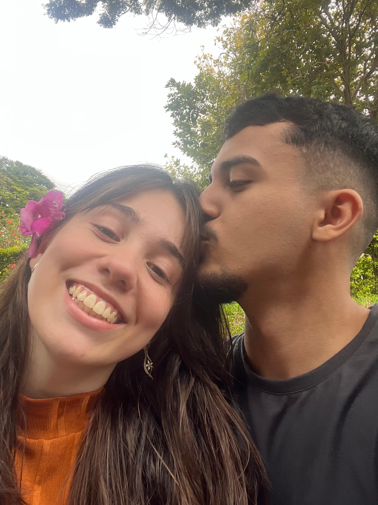

Aqui meu amor, eu fiz um espaço só para nós dois, onde sempre que você entrar vai conseguir se lembrar de nossos melhores momentos.

Como não consegui uma foto da camera da rua, do nosso primeiro olhar, eu peguei o momento que mudou minha vida a nossa primeira interação, e quem imaginaria que iria ser graças a uma tartaruga em 🥹.

Aqui eu já vi que era especial, que após nosso primeiro abraço, e as longas horas juntos, perdendo até o almoço, eu vi que nunca mais iriamos nos desgrudar, eu vi em seus olhos a maior pureza que existe no mundo e me apaixonei por ti, e cada vez mais eu continuo me apaixonando, você e tudo pra mim meu amor.

Eu comprei este buque para ti, o buque mais lindo que eu encontrei, o primeiro de muitos, ele está aqui para você se lembrar de como eram linda as rosas combinando contigo.

Neste ainda estavamos um pouco envergonhados, mas eu amava, amava passar cada segundo escutando sua respiração, escutando a batida do seu coração, eu ainda amo na verdade, como eu amo escutar, amo escutar o seu dia como foi suas aulas, amo te ver falar sobre tudo comigo, te ver surpresa, tudo relacionado a você me encanta meu amor.

Essa foto eu escolhi pois continua nossa historia, nossa historia cheia de carinho e amor, e nesse dia estava lindo a noite, a arvore de flores amarelas atrás, e principalmente você meu amor eu te vivo, e estou imaginando chuvas de arroz na gente, na porta da igreja, o nosso terceiro encontro foi perfeito, e nos deixou mais apaixonados ainda eu amo como você está sorrindo com esse sorriso gigante.

Esse dia foi o melhor horario de almoço que eu ja tive, eu passei ele inteiro ao lado do meu amor, ficamos juntos conversamos tanto meu amor, eu amei esse nosso dia, amei meu Pastel de flango e ver você toda feliz devorando seu belo patel de pizza kkk, eu amo e lembro muito desse dia, eu espero conseguir repetir muitos dias assim, dias em que eu estarei ao seu lado que iremos ficar sempre juntos e fazer tudo juntos, sempre apoiando e estando com o outro, minha vida e completa com a sua meu amor.

Essa fotinha eu estou colando pra sempre que você se sentir diferente você veja, a perfeição de Mulher que você é, você e linda e rica em detalhes, possui os traços mais lindo do mundo e não existe nada no mundo que me faça mudar de ideia, você e a pessoa mais linda, Dona do Sorriso, dos olhos, da boca, do cabelo, do corpo, dos pés, das mãos, de tudo tudo tudo mesmo mais lindo que Deus já fez no universo, pois se tu se visse como eu vejo você, você vai conseguir ver um anjo enviado pelo papai do céu.

Aqui eu nem tenho palavras para descrever como foi perfeito, como cada sentimento foi unico, eu quero sempre repetir e ver essa sensação em ti, comprar seus docinhos e salgadinhos que você nunca comeu, te levar em lugares que você nunca foi, passar experiencias unicas contigo, te mostrar como o mundo e lindo em cada detalhe, principalmente quando estamos ao lado de quem amamos, pois quando estamos ao lado do nosso amor, um simples almoço self service se torna motivo para sorrir, motivo para amar, para se apaixonar e ver mais beleza ainda no nosso amor, a sua capivara de pelucia, o cinema, o chettos, eu conhecer a unifal, almoçar no Ru, colocar a sandalinha em seu pé lindo, e o mais importante passar cada segundo ao seu lado, eu te amo minha princesinha, e ainda estamos apenas no começo de nossa vida, eu ainda vou na casa de seus papais, vamos nos conhecer e vamos viver uma longa vida, pq e como a gente sempre falou o destino nos juntou para passarmos a eternidade juntos.

Anos
Meses
Dias
Horas
Min
Seg
Escreva aqui a história de vocês dois.
Seria o nosso universo, mas como sou eu que estou fazendo, eu vou deixar as estrelas mais lindas que existem na tela, Você meu amor, você é minha estrela favorita, cada uma dessas fotinha e um momento nosso, uma foto aleatoria do dia a dia, que virou uma memoria, um momento, momentos que eu amo relembrar e ver que e essa pessoa que eu quero em minha vida, eu te amo FELIZ ANIVERSARIO meu amor, VOCÊ E SIMPLESMENTE A PESSOA MAIS INCRIVEL DO MUNDOOOOOOOOOOOOOOOOOOOOOOOOOOOOO, aproveite seu dia, eu diria que você e a pessoa mais especial que existe mas acho que sou eu, sou eu por ter essa princesinha ao meu lado, eu sou o Homem mais sortudo que existe, Eu te amo meu amor, e sempre estarei aqui por ti.
Você sempre me surpreende meu amor, com suas falas aleatorias, ou com suas risadas espontaneas, eu encontrei a minha melhor versão contigo, eu vejo uma vida feliz a frente, e essa vida e com você, eu amo quando você da aqueles sorrisos gigantes, amo quando você faz beicinho, amo quando você me enche de beijinho, amo o jeito doce que você fala, como você fica feliz com um simples eu te amo, os nossos abraços apertados, nossos dengos do dia a dia, não importa se estamos longe ou se vai demorar para realizarmos tudo, mas saiba que eu irei aguardar e vou fazer tudo ao seu lado, pois tudo que eu preciso e vejo e você meu amor, então vamos ser pacientes e continuar fortalecendo nosso amor, fortalecer nossa relação e tudo sobre a gente, pois como a musica no fundo, eu te vivo, não precisamos estar colados pra ta junto, o nosso Pedrinho está ai pra te aquecer nesses tempos frios em que eu não irei poder estar contigo, mas por favor, nunca desanime, eu sei como as vezes pode ser triste, pode dar medo, pode ser escuro, mas eu e sua familia sempre vamos estar te apoiando, sempre vamos te dar tudo que você precisar para conseguir conquistar o que almeja, minha vida so e completa contigo, e eu vou até o fim por você. a nossa historia e linda e vamos deixar ela mais longa e cada vez mais linda, eu te amo, que o seu dia hoje seja o mais lindo possivel meu amor, eu te vivo, eu te vivo a cada segundo a cada momento, você e a minha vida. Ass: Seu Pedro .
Você é a melhor coisa que já aconteceu na minha vida meu amor, eu nunca imaginei que conseguiria encontrar uma pessoa como você. Cada momento ao seu lado é especial e eu quero continuar escrevendo nossa história para sempre não apenas hoje, não apenas amanhã, mas transformar cada segundo ao seu lado em algo perfeito é unico.